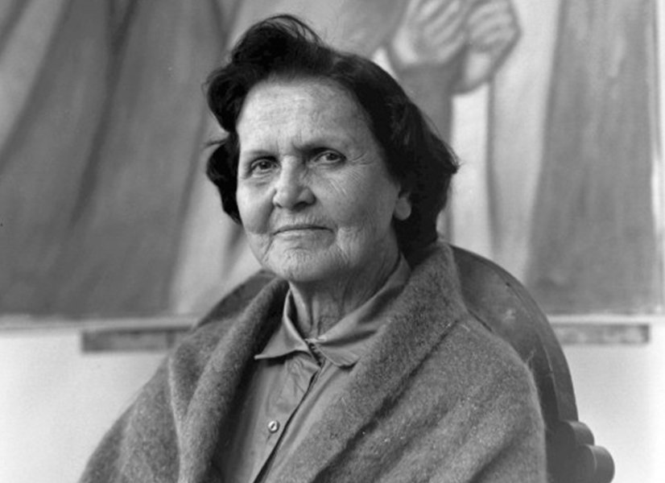

HISTORIA
Descubre las vidas y el legado de los artistas más influyentes de la historia.

Vincent van Gogh
Vincent van Gogh (1853–1890) fue un pintor neerlandés considerado uno de los artistas más influyentes de la historia del arte. Aunque hoy es famoso en todo el mundo, durante su vida vendió muy pocas obras y vivió gran parte del tiempo en la pobreza.
Carrera Artistica
Entre 1880 y 1890 produjo más de 2.000 obras, incluidas alrededor de 860 pinturas al óleo. Sus primeros trabajos tenían colores oscuros y retrataban la vida de los trabajadores y campesinos, como Los comedores de patatas (1885).
En 1886 se trasladó a París, donde conoció las corrientes impresionistas y postimpresionistas. Allí su estilo cambió radicalmente: comenzó a utilizar colores más brillantes y pinceladas más expresivas.
Arlés y sus obras más famosas
En 1888 se mudó a Arlés, en el sur de Francia. Fue uno de los períodos más productivos de su vida. Pintó obras célebres como:
Los girasoles
La habitación en Arlés
La noche estrellada sobre el Ródano
También convivió durante un tiempo con el pintor Paul Gauguin, pero la relación terminó en conflictos.
En 1889 ingresó voluntariamente en un sanatorio en Saint-Rémy-de-Provence. Allí pintó una de sus obras más famosas: La noche estrellada.
En 1890 se trasladó a Auvers-sur-Oise, cerca de París. El 27 de julio de ese año se disparó en el pecho y murió dos días después, a los 37 años.
La Crisis de la Oreja
A finales de 1888 sufrió una grave crisis mental. Tras una discusión con Gauguin, Van Gogh se cortó parte de una oreja y fue hospitalizado. Este episodio se convirtió en uno de los más conocidos de su biografía.
Últimos años y Muerte
En 1889 ingresó voluntariamente en un sanatorio en Saint-Rémy-de-Provence. Allí pintó una de sus obras más famosas: La noche estrellada.
En 1890 se trasladó a Auvers-sur-Oise, cerca de París. El 27 de julio de ese año se disparó en el pecho y murió dos días después, a los 37 años
Primeros Años
Nació el 30 de marzo de 1853 en Zundert, Países Bajos. Antes de dedicarse a la pintura trabajó como comerciante de arte, maestro y predicador. A los 27 años decidió convertirse en artista.
Legado
tras su muerte, su hermano Theo y la viuda de este, Johanna van Gogh-Bonger, ayudaron a difundir su obra. Con el tiempo, Van Gogh se convirtió en un símbolo del genio artístico y una figura fundamental del arte moderno. Hoy sus pinturas se encuentran entre las más admiradas y valiosas del mundo.

Leonardo da Vinci
Leonardo da Vinci (1452–1519) fue un artista, inventor, científico e ingeniero italiano, considerado uno de los mayores genios del Renacimiento.
Nacio
el 15 de abril de 1452 en Vinci, Italia. Desde joven mostró un gran talento para el dibujo y comenzó su formación artística en el taller de Andrea del Verrocchio, donde aprendió pintura, escultura e ingeniería
.
A lo largo de su vida trabajó para importantes gobernantes de Italia y Francia. Además de pintar, estudió anatomía, botánica, arquitectura, matemáticas y diseñó inventos que se adelantaron a su época, como máquinas voladoras, puentes y vehículos.
Entre sus obras más famosas se encuentran:
Obras
- La Mona Lisa
- La última cena
- el dibujo del Hombre de Vitruvio.
Legado
En 1516 se trasladó a Francia por invitación del rey Francisco I. Allí pasó sus últimos años y falleció el 2 de mayo de 1519, a los 67 años.
Leonardo da Vinci dejó un legado extraordinario en el arte y la ciencia. Sus pinturas, estudios e inventos siguen siendo admirados en todo el mundo, y es considerado uno de los personajes más importantes e influyentes de la historia.

Pablo Picasso
Pablo Picasso (1881–1973) fue un pintor, escultor y grabador español, considerado uno de los artistas más importantes e influyentes del siglo XX.
Nació el 25 de octubre de 1881 en Málaga, España. Desde niño demostró un gran talento para el dibujo y la pintura, por lo que estudió arte y comenzó a exponer sus obras desde muy joven.
arte
A lo largo de su carrera experimentó con diferentes estilos. Pasó por el Período Azul y el Período Rosa, y más tarde, junto con Georges Braque, desarrolló el cubismo, un movimiento artístico que cambió la forma de representar los objetos y las personas.
Entre sus obras más famosas se encuentran:
Guernica
Las señoritas de Aviñón
La mujer que llora.
Legado
Pablo Picasso dejó miles de obras de arte y revolucionó la pintura moderna. Su creatividad e innovación hicieron que sea recordado como uno de los artistas más influyentes de la historia del arte.
Ultimos Años
Picasso vivió gran parte de su vida en Francia, donde continuó creando pinturas, esculturas, cerámicas y grabados. Falleció el 8 de abril de 1973, a los 91 años.

Johannes Vermeer
Johannes Vermeer (1632–1675) fue un pintor neerlandés del Barroco, reconocido por sus escenas de la vida cotidiana y por el extraordinario uso de la luz y el color.
Nacio
Nació en 1632 en Delft, Países Bajos. Desde joven se interesó por la pintura y desarrolló un estilo muy detallado, creando obras tranquilas que muestran personas en interiores realizando actividades cotidianas. Durante su vida pintó relativamente pocas obras, alrededor de 35, y aunque fue respetado en su ciudad, no alcanzó una gran fama. Tras su muerte, cayó casi en el olvido durante muchos años.
Arte
Entre sus pinturas más conocidas se encuentran
- La joven de la perla
- La lechera
- Vista de Delft.
fallecimiento
Johannes Vermeer falleció en 1675, a los 43 años. Con el paso del tiempo, su obra fue redescubierta y hoy es considerado uno de los pintores más importantes de la historia del arte.
Legado
Vermeer es admirado por su habilidad para representar la luz, los detalles y la serenidad de las escenas cotidianas. Sus pinturas son consideradas verdaderas obras maestras y continúan inspirando a artistas y amantes del arte en todo el mundo.

Grant Wood
Grant Wood (1891–1942) fue un pintor estadounidense, conocido por representar la vida rural de Estados Unidos y por ser uno de los principales artistas del movimiento del regionalismo.
Nacio
Nació el 13 de febrero de 1891 en Iowa, Estados Unidos. Desde joven mostró interés por el arte y estudió dibujo y pintura. Aunque viajó a Europa para conocer diferentes estilos artísticos, decidió inspirarse en los paisajes y las personas de su región.
Ultimos momentos
muchos artistas jóvenes. Sus obras se caracterizan por sus
detalles, colores suaves y por reflejar la vida cotidiana del campo.
Grant Wood falleció el 12 de febrero de 1942, a los 50 años.
obra
Además de pintar, Grant Wood fue profesor de arte y apoyó a
Su obra más famosa es American Gothic (1930),
un retrato de un granjero y su hija frente a
una casa de estilo gótico, que se convirtió
en una de las pinturas más reconocidas del
arte estadounidense.
Legado
Grant Wood dejó una huella importante en el arte estadounidense al destacar la belleza y la identidad de la vida rural. Hoy es recordado como uno de los artistas más importantes de Estados Unidos, y American Gothic sigue siendo una de las pinturas más famosas del mundo.

Fernando Botero
Fernando Botero (1932–2023) fue un pintor y escultor colombiano, reconocido mundialmente por su estilo único, caracterizado por representar personas, animales y objetos con formas amplias y voluminosas.
Nacio
Nació el 19 de abril de 1932 en Medellín, Colombia. Desde joven mostró interés por el arte y comenzó a estudiar pintura. Con el tiempo desarrolló un estilo propio, conocido como boterismo, que no busca representar el peso de las personas, sino resaltar el volumen y las formas.
arte y momentos
A lo largo de su carrera creó miles de pinturas, dibujos y esculturas. Sus obras representan escenas de la vida cotidiana, retratos, naturalezas muertas y acontecimientos históricos. Entre sus trabajos más conocidos se encuentran La Mona Lisa, a los doce años, La familia y sus monumentales esculturas expuestas en ciudades de todo el mundo.
Fallecimiento
Fernando Botero falleció el 15 de septiembre de 2023, a los 91 años, dejando un legado artístico de gran importancia para Colombia y el mundo.
Legado
Fernando Botero es considerado uno de los artistas latinoamericanos más importantes de la historia. Su estilo inconfundible hizo que sus obras fueran reconocidas internacionalmente, y hoy sus pinturas y esculturas se exhiben en museos, plazas y galerías de numerosos países.

Debora Arango
Débora Arango (1907–2005) fue una pintora colombiana, reconocida por sus obras de estilo expresionista y por abordar temas sociales y políticos de su época.
Nacio
Nació el 11 de noviembre de 1907 en Medellín, Colombia. Desde joven mostró interés por el arte y estudió pintura con diferentes maestros. Con el tiempo desarrolló un estilo propio, caracterizado por colores fuertes y figuras expresivas.
Ultimos momentos
Sus obras representaron temas que muchas veces eran considerados polémicos, como la desigualdad social, la violencia, la situación de las mujeres y algunos problemas políticos de Colombia. Por esto, varias de sus pinturas generaron críticas y controversia. Débora Arango falleció el 4 de diciembre de 2005, a los 98 años. Hoy es considerada una de las artistas colombianas más importantes del siglo XX.
obra
Entre sus obras más conocidas se encuentran La salida de Laureano, Justicia y El almuerzo de los pobres.
Legado
Su obra se destacó por utilizar el arte como una forma de expresar críticas sobre la sociedad. Débora Arango abrió camino para muchas mujeres artistas en Colombia y dejó un importante legado en el arte latinoamericano.

Frida Kahlo
Frida Kahlo (1907–1954) fue una pintora mexicana reconocida por sus autorretratos y por expresar en sus obras aspectos de su vida, emociones, identidad y cultura mexicana.
Nacio
Nació el 6 de julio de 1907 en Coyoacán, México. Desde joven mostró interés por la pintura. Durante su vida atravesó varias dificultades que influyeron en su obra y en la manera en que representaba sus experiencias.
Ultimos momentos
Estuvo casada con el muralista mexicano Diego Rivera. Su relación y diferentes experiencias personales también influyeron en algunas de sus pinturas.
Arte
Frida creó numerosos autorretratos, utilizando colores intensos y elementos de la cultura mexicana. Entre sus obras más conocidas se encuentran Las dos Fridas, La columna rota y Autorretrato con collar de espinas.
Fallecimiento
Frida Kahlo falleció el 13 de julio de 1954, a los 47 años, en Ciudad de México.
Legado
Frida Kahlo se convirtió en una de las artistas mexicanas más reconocidas internacionalmente. Su estilo y la forma en que convirtió experiencias personales en arte hicieron que sus obras fueran especialmente influyentes en el arte del siglo XX.